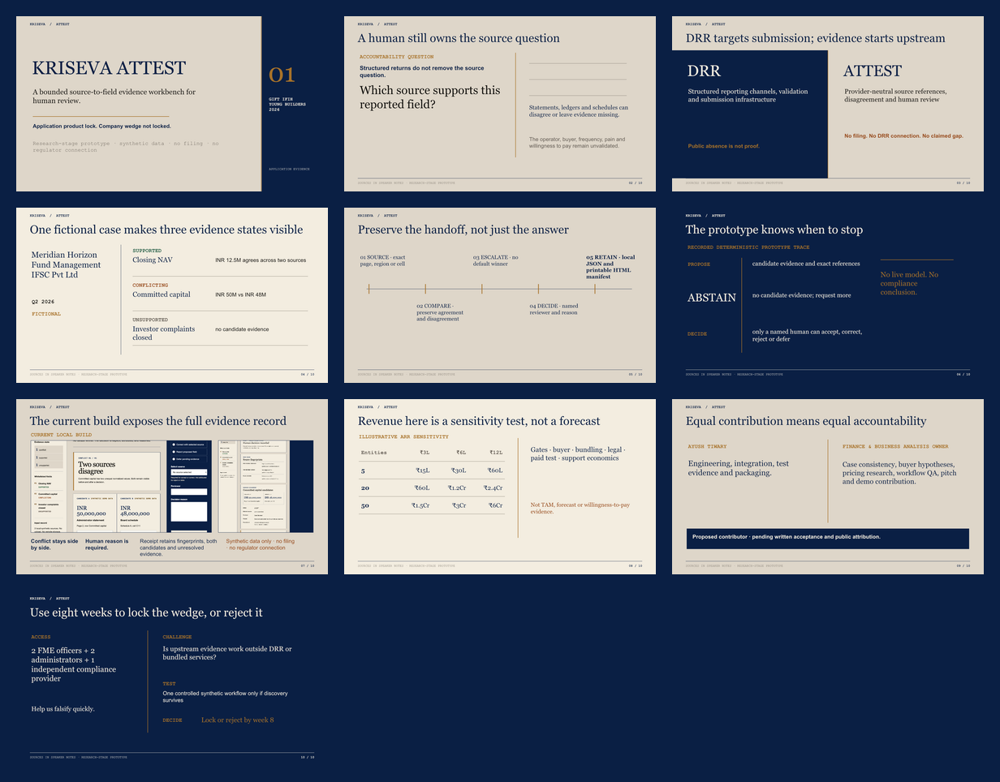

GIFT IFIH / Young Builders / 2026
Evidence before assertion.
A ten-slide account of the bounded prototype, the human decision boundary, the commercial unknowns, and the eight-week falsification ask.
Return to submission dossierFull-deck inspection
Ten-slide montage

Release boundary
A prototype narrative, not market proof.
The deck uses one fictional entity and synthetic data. It makes no filing, regulator-connection, customer, pilot, deployment, accuracy, or willingness-to-pay claim. Programme access is requested for role-balanced practitioner testing and a controlled decision to lock or reject the company wedge.